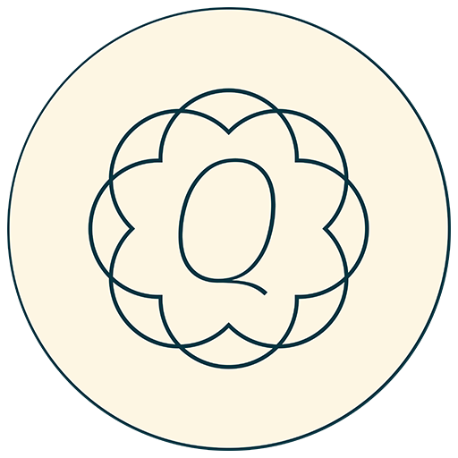

<doctype !HTML>
<meta charset="utf-8">
<head>
	<title>Qawl</title>
	<link rel="stylesheet" type="text/css" href="style.css">
	<link rel="stylesheet" type="text/css" media='' href="light.css" id="lightCss">
	<link rel="stylesheet" type="text/css" media='none' href="dark.css" id="darkCss">
	<script type="text/javascript">
		window.heap=window.heap||[],heap.load=function(e,t){window.heap.appid=e,window.heap.config=t=t||{};var r=t.forceSSL||"https:"===document.location.protocol,a=document.createElement("script");a.type="text/javascript",a.async=!0,a.src=(r?"https:":"http:")+"//cdn.heapanalytics.com/js/heap-"+e+".js";var n=document.getElementsByTagName("script")[0];n.parentNode.insertBefore(a,n);for(var o=function(e){return function(){heap.push([e].concat(Array.prototype.slice.call(arguments,0)))}},p=["addEventProperties","addUserProperties","clearEventProperties","identify","resetIdentity","removeEventProperty","setEventProperties","track","unsetEventProperty"],c=0;c<p.length;c++)heap[p[c]]=o(p[c])};
		  heap.load("1194431884");
	</script>
</head>
<body class="dragscroll">
	<div id="wrapper">
		
		
	</div>
	<div id="footer" class="footerControls">
		<div class="footerSurahSelect">
			<select id="surahSelect" onchange="surahDropdown();">
				<option value="">Sūrah…</option>
			</select>
			<button id="openOnQuranCom" onclick="openOnQuranCom();" class="icon-globe" title="Open translations and recitations"></button>
		</div>
		<div class="footerPageOptions">
			<button onclick="turnPage(+2);" title="Turn left" class="icon-left-circle"></button>
			<form id="pageForm" onsubmit="return false">
				<input type="number" onkeyup="checkDigits();" name="pageNumberInput" onfocus="this.value=''" 
					id="pageNumberInput" max="604" min="1">
				<input type="submit" name="go" value="submit" onclick="return numberOfPage();"; style="display: none"/>
			</form>
			<button onclick="turnPage(-2);" title="Turn right" class="icon-right-circle"></button>
		</div>
		<div class="footerSettings">
			<button id="quickSwitch" onclick="quickSwitch();" title="Flip to last page" class="icon-switch"></button>
			<button id="toggleTheme" onclick="toggleTheme();" title="Switch theme" class="icon-moon"></button>
			<button id="fullScreen" onclick="toggleFullscreen();" title="Toggle fullscreen" class="icon-resize-full"></button>
			<button id="zoomOut" onclick="changeZoom(-5);" title="Zoom out" class="icon-zoom-out"></button>
			<button id="zoomIn" onclick="changeZoom(+5);" title="Zoom in" class="icon-zoom-in"></button>
		</div>
	</div>
	<div id="overlay">
		<div class="overlayContents">
			
			<h1>Qawl</h1>
			<p>Move mouse to resume</p>
		</div>
	</div>
	
<script type="text/javascript" src="surahs.js"></script>
<script type="text/javascript" src="script.js"></script>
<script src="tippy.all.min.js"></script>
<link rel="stylesheet" href="assets/icon-font/css/fontello.css">
<script>
	tippy('[title]', {
		delay: [2000, 200],
		arrow: true,
		size: 'small',
		theme: "tippy-backdrop",
		animateFill: true
	})
</script>
</body>